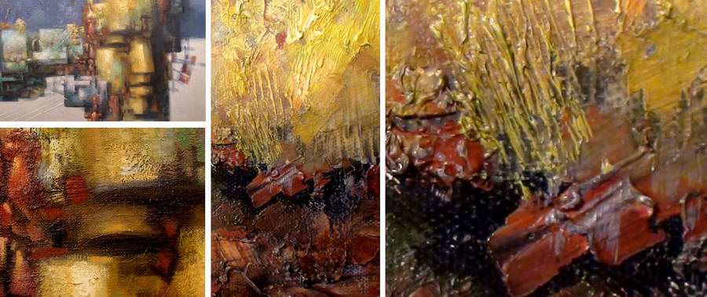
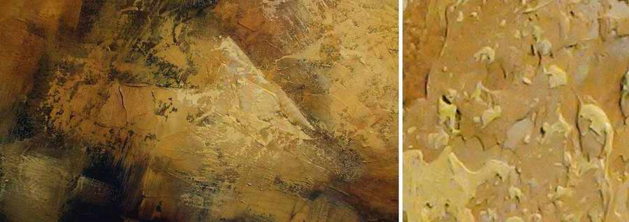
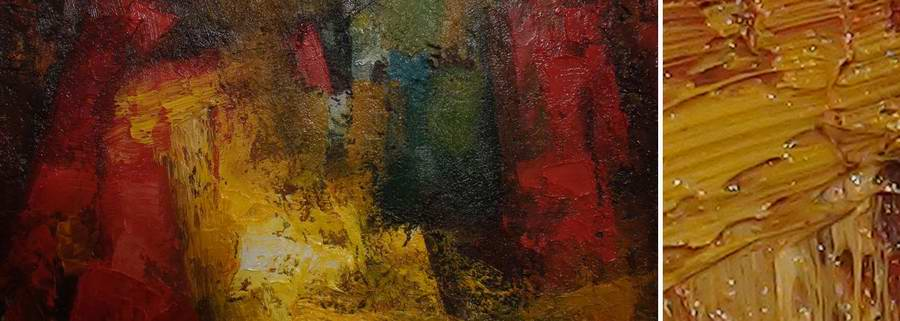

ПОНИМАТЬ язык Библии. ЗРИ В КОРЕНЬ
Не секрет, что любой перевод, каким бы качественным и помазанным он ни был, не в состоянии передать всю глубину и многозначность оригинального текста. Есть такие места, когда перевод слова на иврите в Писании не может быть однозначным. Перевод, выбирая лишь одно из значений, вносит однозначность туда, где ее нет. Поэтому нет альтернативы исследованию священных текстов на языке оригинала языке.

Для изучения ивритского оригинала Библии я пользуюсь НОМЕРАМИ СТРОНГА и хотел бы поделиться некоторыми простыми приемами работы с ними. Это замечательный инструмент для тех, кто вообще не различает ивритских букв, а также для тех, кто владеет азами, и тем более для продвинутых в иврите.
Я пользуюсь программой "ЦИТАТА из Библии" (BibleQuote). Она, на мой взгляд, одна из лучших библейских программ и к тому же совершенно бесплатная. Ссылки для скачивания программы модулей для нее смотрите в нижней части статьи.
Как узнать, значение ивритского слова оригинального текста ТАНАХа?
Для более глубокого исследования потребуется иврит. Знание алфавита и умение читать с огласовками уже значительно продвинет вас в изучении оригинального текста Писания, и это вполне реально для любого желающего. Каждый следующий ваш шаг по изучению иврита будет открывать новые и новые двери познания Библии.
Если вы не владеете в полной мере древнееврейским языком Писания, программа BibleQuote предоставляет тем не менее, некоторые возможности проникнуть в тайны, сокрытые в глубинах оригинального текста.
Отличным инструментом для этих целей также может служить Симфония Стронга, содержащая в себе все слова Библии и номера, присвоенные каждому из них.
Узнать значение слова исключительно просто. Номера Стронга в программе кликабельны – жмем на номер и в левом столбце программы получаем значения слова оригинального текста Писания, + синонимы (с соответствующими им номерами). (подробнее см.видео "Номера Стронга 1" + "шофар и труба").
Как найти все стихи в Библии с оригинальным словом ивритского текста?
В переводе Библии на русский язык ивритское слово нередко переводится по-разному. Так слово КИНОР - переведено на русский язык как гусли, цитра и арфа. Но тем же словом "цитра" переведен и другой музыкальный инструмент – «катирус» (греческая китара (кифара)).
С другой стороны, одно и то же слово перевода нередко указывает на разные слова ивритского оригинала. Например, в Синодальном переводе слово «художник» скрывает под собой разные слова на иврите:
1. חרש /хараш/ - ремесленник, искусный мастер (резчик, художник, кузнец, плотник).
2. חרש /хереш/ - 1. ремесленник, искусный мастер; 2. тайно.
3. יצר /йоцер/ - 1. формировать, ваять; 2. создавать, образовывать.
4. חכם /хахам/ - 1. умелый, искусный, опытный; 2. мудрый;
5. אמן /оман/ - художник, искусный мастер.
При внимательном исследовании Писания важно разобраться в нюансах, понять что имеется в виду, когда используется именно это слово, а не его синоним. Все перечисленные выше значения слова «художник» в русском переводе близки между собой. Но, выражают при этом разные стороны творчества: ХАРАШ – идет от обработки материала, выделении из бесформенного – формы. ХЕРЕШ – идет от выявления через творчество сокрытого. ЙОЦЕР – от создания нового из материала. ХАХАМ – от мудрости познания творения Божия. ОМАН, самое таинственное именование художника, – связанно с верой и отношениями с Творцом.

Как же найти все стихи в Библии с оригинальным ивритским словом, тем самым, что вы встретили в конкретном стихе Писания? Программа BibleQuote просто решает эту задачу: надо осуществить поиск в программе по номеру Стронга. Для этого в строке поиска введите номер искомого слова. /Подробнее смотрите видео ниже/.
КАК НАЙТИ ДРУГИЕ СЛОВА ТОГО ЖЕ КОРНЯ?
Для проникновения в глубину и многозначность оригинального текста не достаточно знания перевода конкретного слова. Более глубокого уровня раскрытия смысла можно достичь через исследования других слов того же корня, что интересующее нас слово. При изучении других слов того же корня и контекстов, в которых они употребляются, мы обнаруживаем как бы разветвляющееся дерево, отдельные ветви и листья которого связаны между собой и оказывают друг на друга взаимное влияние. Так что интересующий нас текст может предстать пред нами в новом, мерцающем свете с его многозначностью и различными версиями перевода.
Прием, которым я хочу с вами поделиться достаточно прост и предполагает хотя бы начальные познания в иврите (чем познания ваши глубже, тем более глубокие поиски вы сможете осуществлять.
Если для примера осуществить поиск по номерам Стронга всех слов, однокоренных слову "аминь", получим следующий результат:
Некоторые из слов корня «אמן»:
- אמן (0539): 1. воспитатель, нянька. 2. быть верным, надёжным, быть твёрдым, непоколебимым;
- אמן (0540): верить; прич. верный, надёжный.
- אמן (0541): уклониться направо, повернуть направо
- אָמָּן (0542): искусный мастер (художник).
- אָמֵן (0543): 1. истина; 2. истинно, верно, аминь
- אׇמְנָה (0545): покровительство, воспитание.
- אׇמְנָה (0546): верно, истинно, подлинно.
- אֹמְנָה (0547): дверной косяк или столб.
- אֲמָנָה (0548): 1. соглашение, договор; 2. что-то определённое или установленное.
- אׇמְנָם (0551): истинно, верно, подлинно, действительно.
- הַאֻמְנָם (0551): истинно, верно, подлинно, действительно, в самом деле.

Что же скажем? Если мы хотим углубиться, придется хотя бы немного (чем больше, чем лучше) освоить язык Писания. Чем более наше владение ивритом, тем больше откроется пред нами Писание. Это наверное, можно сравнить с рассматриванием в микроскоп или телескоп, так что Писание развернется пред нами как вселенная и постепенно все больше звезд мы научимся различать на небосклоне текста ТАНАХа.
Скачать программу (последняя версия программы (6-бета).
Краткое описание программы см. здесь.
Более подробное описание представлено в самой программе. См.меню: ПОМОЩЬ / РУКОВОДСТВО ПОЛЬЗОВАТЕЛЯ
(после скачивания модули распаковать и поместить в папку с программой). Их существует множество, в т.ч. различные переводы Библии (христианские и иудейские), библейские словари, комментарии к тексту Библии и тексты ТАНАХа (т.н. Ветх.Зав.) на иврите и Нового Зав. на греческом.
О Джеймсе Стронге читать здесь.
Смотрите также о программе для мобильников Библия на иврите и аудио чтением всего ТАНАХа
Какие библейские программы и интернет-ресурсы используете вы? Расскажите о ваших приемах их использования, особенно о работе над ивритом Писания.
автор: Эфраим Калиш /TORAART/